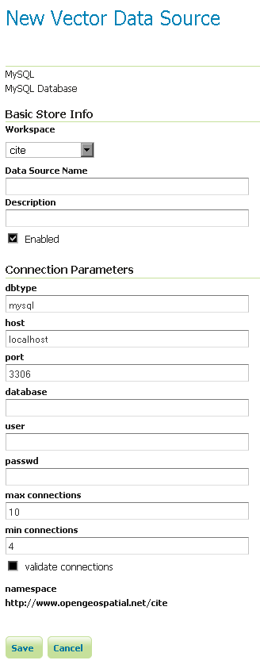

MySQL¶
주석
GeoServer는 초기 상태에서 MySQL을 지원하지 못 하기 때문에 확장 모듈(extension)을 설치해야 합니다. 설치 방법은 Installing the MySQL extension을 참조하십시오.
경고
현재 MySQL 확장 모듈은 관리 및 지원이 안 되고 있는 상황입니다. 사용할 수는 있지만 다른 확장 모듈과 같은 안정성을 기대해서는 안 됩니다.
MySQL은 공간 기능에 약간 제약이 있는, 데이터 결합이 용이한 오픈소스 DB입니다.
Installing the MySQL extension¶
GeoServer download page에서 MySQL 확장 모듈을 다운로드합니다.
경고
GeoServer 인스턴스 버전과 확장 모듈 버전이 일치해야 합니다!
압축 파일의 내용물을 GeoServer 설치 디렉터리의 WEB-INF/lib 디렉터리 안에 풉니다.
Adding a MySQL database¶
확장 모듈이 제대로 설치됐다면 새로운 데이터 저장소를 생성할 때 Vector Data Sources 목록에 MySQL 옵션이 보일 것입니다.

벡터 데이터 저장소 목록의 MySQL 옵션
Configuring a MySQL data store¶

MySQL 데이터 저장소 설정하기
| 옵션 | 설명 |
| host | MySQL 서버 호스트명 또는 IP 주소를 설정합니다. |
| port | MySQL 서버와 연결할 포트 번호를 설정합니다. |
| database | 연결할 DB명을 설정합니다. |
| user | MySQL DB에 연결할 사용자명을 설정합니다. |
| password | MySQL DB 연결 시 사용할 비밀번호를 설정합니다. 비밀번호가 없다면 공란으로 남겨두십시오. |
| max connections min connections validate connections |
Connection pool 설정 파라미터입니다. 자세한 내용은 Database Connection Pooling 섹션을 참조하십시오. |